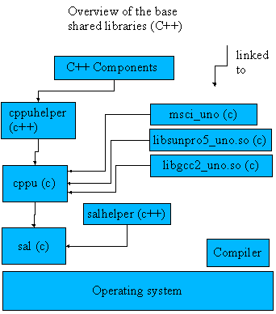

A Guide to C++ UNO |
|
Contents
Overview
Shared library overview
System abstraction layer (sal)
C++ mapping of IDL-types
The cppuhelper module
UNO contexts
C++ components
Common programming patterns
Overview
This document gives an introduction to the C++ mapping of UNO. You should have read the A guide to language independent UNO, before reading with this document. It is a good idea to look at the relevant source code after reading this document. Some C++ components which follow the the concepts explained below can be found in the stoc, io or remotebridges modules, for example.
TODO :
- Documentation of the exported symbols in the Components section
Shared library overview
In the above diagram the (C) means C-linkage, (C++) means C++ linkage. For all libraries you will need a C++ compiler to build.
The base for all UDK-libraries is the sal-library, that contains all system abstractions and does not contain any UNO-specific data. The most commonly used C-functions can be accessed via C++ inline wrappers. This allows to call the functions from any other programming language. The salhelper-library offers additional base functionality, that could be implemented inline.
The cppu ( = C Plus Plus Uno) library is the core uno library. It offers methods to access the UNO type library and allows to generically create, copy and compare values of UNO data types. Additionally all bridges (= mappings + environments) are administered here.
msci_uno, sunpro5_uno and urp_uno are only examples for language binding libraries (MS VC++ 6, sunpro5 solaris).
The cppuhelper library is a C++ library, that contains some important base classes for components (see below). C++ components are usually linked against cppuhelper.
System abstraction layer (sal)
The sal-library offers operating system dependent services behind one interface. The aim is to minimize, or eliminate, operating system dependent #ifdefs in libraries above sal. Further more basic features such as strings are implemented in sal. Sal exports only C-symbols, there are inline C++ wrappers for convenience where it is sensible.
File access
osl::FileBaseosl::VolumeInfoosl::FileStatusosl::Fileosl::DirectoryItemosl::DirectoryThread safe refcounting
osl_incrementInterlockedCount and osl_decrementInterlockedCount
allow to modify a thread safe 4 byte counter.
Threads and thread synchronization
::osl::Mutex::osl::Condition::osl::Semaphore::osl::Thread(docu not yet available)
Interprocess communication
::osl::Socket(docu not yet available)::osl::Pipe(docu not yet available)Strings
The string classes in sal (rtl::OUString
for Unicode-strings and
rtl::OString for byte strings) are C++ wrapper for refcounted
immutable C-strings.
The rtl::OUStringBuffer and
rtl::OStringBuffer allow efficient
concatenation of strings.
Byte sequence
The::rtl::ByteSequence
is a C++ wrapper around
C-functions
for a refcounted piece of memory. The ByteSequence is binary compatible to
com::sun::star::uno::Sequence< sal_Int8>, both can be cast into each other.
C++ mapping of IDL-types
The binary specification for the IDL to C++ mapping can be found here, where some typical use cases of the C++ mapping are shown.
Interface references
Interface references, seecom::sun::star::uno::Reference-template,
are used to hold interfaces. The reference constructor (ctor) acquires
(increases the refcount by one) the interface and the destructor releases the
interface.
Example 1 :
using namespace ::com::sun::star::uno;
{
// refcount of pSimpleUnoObject is zero
OWeakObject *pSimpleUnoObject = new ::cppu::OWeakObject();
// ctor calls acquire, increases refcount
Reference< XInterface > reference( (XInterface *) pSimpleUnoObject );
// destructor of reference calls release, refcount drops to zero,
// release does a delete this, the object is destroyed;
}
|
cppu::OWeakObject
is a very simple uno-object, that is often used as a base class for other
UNO-objects, as explained
below.
Here it is only important to know, that it correctly implements
XInterface. The above code has no resource leak, it is perfectly OK
(though certainly not very useful).
Example 2:
using namespace ::rtl;
using namespace ::com::sun::star::lang;
using namespace ::com::sun::star::uno;
using namespace ::com::sun::star::io;
{
// get service manager of component context
// ( how the context is bootstrapped, is explained below ).
Reference < XMultiComponentFactory > rServiceManager = xContext->getServiceManager();
// create the Pipe service
Reference< XInterface > r = rServiceManager->createInstanceWithContext(
OUString::createFromAscii( "com.sun.star.io.Pipe" ), xContext );
assert( r.is() ); // the service must exist
// ask the XInterface-reference for the XInputStream interface
Reference< XInputStream > rInputStream( r , UNO_QUERY );
assert( rInputStream.is() ); // the service must support XInputStream
// ask the XInterface-reference for the XOutputStream interface
Reference< XOutputStream > rOutputStream( r , UNO_QUERY );
assert( rOutputStream.is() ) // test service must support XOutputStream
[.... do some calls on the references]
// each references calls release when it is destructed.
// The last release destroys the object.
}
|
In the first line, an initial component context (factory context) is bootstrapped (see
below
, how this can be done).
The second line retrieves the bootstrapped service manager of the context.
The next line creates the service
com.sun.star.io.Pipe
and returns a reference
to XInterface (Note: the operator ->() simply returns the unacquired
interface pointer).
This service supports
XInputStream
and
XOutputStream
, the next lines retrieve these interfaces.
The used reference constructor (the magic UNO_QUERY is an
element of a dummy enum, that allows to have
a 2nd constructor which takes an interface reference as an argument) performs a
queryInterface
on r for the interface (here XInputStream and XOutputStream), the results
are stored within the references.
Weak references
In general every uno object allows to hold weak references on it (see OWeakObject). Weak references allow to retrieve a hard interface reference if the object has been not destroyed before.
Example
class A
{
private:
WeakReference< XInputStream > m_wrStream;
void set( const Reference< XInputStream > &r )
{
// store to weak reference
m_wrStream = r;
}
Reference< XInputStream > get()
{
// try to make the weak reference hard
Reference< XIntputStream > r = m_wrStream;
// Note : r.is() may be true or not, depending on whether
// the object has been destroyed before.
return r;
}
};
|
Sequence
For every type in UNO exists another type, the sequence < type >. In C++,
this is managed by the Sequence
template, which is a wrapper around a refcounted C-struct. The
sequence follows a copy on modify strategy (if the refcount is larger than 1,
the sequence is copy-constructed). The sequence can only be used with
UNO-types, because it needs a getCppuType for the element type (
which are generated by the build environment).
Some basic examples how to use the template
{
// create an integer sequence with 3 elements,
// elements are defaulted to zero.
Sequence< sal_Int32 > seqInt( 3 );
// get a read write pointer (this method checks for
// the refcount and does a copy on demand).
// however, if you know, that the refcount is one
// ( as in this case, the sequence has just been
// constructed), you could avoid the check
// (which is a C-call overhead)
// by writing sal_Int32 *pArray =
// (sal_Int32*) seqInt.getConstArray();
sal_Int32 *pArray = seqInt.getArray();
// modify the members
pArray[0] = 4;
pArray[1] = 5;
pArray[2] = 3;
}
{
sal_Int32 sourceArray[3] = {3,5,3};
// result is the same as above, but initialises from a buffer.
Sequence< sal_Int32 > seqInt( sourceArray , 3 );
}
{
// construct a sequence of Property structs,
// the structs are default constructed
Sequence< Property > seqProperty(2);
seqProperty.getArray()[0].Name = OUString::createFromAscii( "A" );
seqProperty.getArray()[0].Handle = 0;
seqProperty.getArray()[1].Name = OUString::createFromAscii( "B" );
seqProperty.getArray()[1].Handle = 1;
// copy construct the sequence (The refcount is raised)
Sequence< Property > seqProperty2 = seqProperty;
// access a sequence
for( sal_Int32 i = 0 ; i < seqProperty.getLength() ; i ++ )
{
// Please NOTE : seqProperty.getArray() would also work, but
// it is very expensive, because a
// unnecessary copy construction
// of the sequence takes place.
printf( "%d\n" , seqProperty.getConstArray()[i] );
}
}
|
Any
TheAny is a generic
container, that stores a type and a value. Here are some basic examples, how to
you use the Any :
{
sal_Int32 i = 5;
OUString string = OUString::createFromAscii( "demo" );
Any aInt,aString;
// put an sal_Int32 into an any
aInt <<= i;
// put a string into an any
aString <<= string;
// extract an int out of an any
sal_Int32 i2;
if( aInt >>= i2 )
{
printf( "int successfully extracted %d!\n" , i2 );
}
// the any does no conversion from string to int during extraction,
// use the typeconverter service for theses purposes.
if( !( aString >>= i2 ) )
{
printf( "string could not be converted to an int\n" );
}
}
|
Exception
UNO exceptions can simply be thrown like C++ exceptions. Example :
void ArbitraryService::doSomething( const Any &a )
throws( IllegalArgumentException )
{
sal_Int32 i;
if( ! (a >>= i ) )
{
// a int was specified to be in the any
IllegalArgumentException exception;
exception.Message = OUString::createFromAscii(
"unexpected type in any" );
exception.ArgumentPosition = 0;
throw exception;
}
}
|
The cppuhelper module
cppuhelper contains important base classes for UNO-objects, a bootstrap mechanism for the initial component context (factory context) and some other objects. The cppuhelper and salhelper libraries are the only C++-linkage libraries within the UDK.
Weak object
Thecppu::OWeakObject
is the suggested minimum base class that every uno object should support.
(see cppuhelper/weak.hxx). It implements a basic refcounting object and allows others to
hold the object weak (see weak references).
Example of an uno-object, that uses OWeakObject as base class.
class OFileWriter : public OWeakObject, public XOutputStream
{
public:
OFileWriter( char *pcFile ) : m_f( fopen( pcFile , "w" ) )
{}
public: // XInterface implementation
virtual Any SAL_CALL queryInterface(
const ::com::sun::star::uno::Type& aType ) throw()
{
Any a = ::cppu::queryInterface(
aType, static_cast< XOutputStream * >( this ) );
if( a.hasValue() )
{
return a;
}
return OWeakObject::queryInterface( aType );
}
virtual void SAL_CALL acquire()
{ OWeakObject::acquire(); }
virtual void SAL_CALL release()
{ OWeakObject::release(); }
public: // XOutputStream implementation
virtual void SAL_CALL writeBytes(
const Sequence< sal_Int8 >& aData) throw ()
{
fwrite( aData.getConstArray() , 1 , aData.getLength() , m_f );
}
virtual void SAL_CALL flush(void) throw ()
{
fflush( m_f );
}
virtual void SAL_CALL closeOutput(void) throw ()
{
fclose( m_f );
}
private:
FILE *m_f;
};
|
The class implements an XOutputStream using stdc library. The constructor creates a file and stores the file handle in a class member.
The task of queryInterface is to return the correct interface reference for the requested
type, therefore it must cast the this-pointer to the correct interface pointer.
The task is simplified by the global queryInterface-template-method, which compares the requested
type with the cast this-pointers. If they match, an any with the
correct reference is returned,
otherwise an empty (void) any is returned. If the latter case is true, the call is delegated
to OWeakObject's queryInterface.
acquire and release are delegated to OWeakObject to resolve ambiguities.
The following three methods simply implement the XOutputStream interface. Note that error checking has been omitted to simplify the code (this is certainly a very poor XOutputSteam implementation).
The methods have been implemented inline to shorten the source. There is certainly no advantage in inlining virtual methods and should not be done in general.
The object is not scriptable because it does not support the XTypeProvider -interface.
The Component helper
cppu::OComponentHelper
is the suggested base class for UNO-objects that must
support the
XComponent
interface. The implementation(see cppuhelper/weak.hxx )
takes care of event listener
administration and ensures correctly notifying all listeners in both possible
cases (refcount drops to zero or dispose is called).
OComponentHelper is derived from OWeakObject.
The implementation helper
The so called implementation helpers are an excellent template variation of the above base classes. The use can be best explained with a sample :
class OFileWriter : public WeakImplHelper1< XOutputStream >
{
public:
OFileWriter( char *pcFile ) : m_f( fopen( pcFile , "w" ) )
{}
public: // XOutputStream implementation
virtual void SAL_CALL writeBytes(const Sequence< sal_Int8 >& aData) throw ()
{
fwrite( aData.getConstArray() , 1 , aData.getLength() , m_f );
}
virtual void SAL_CALL flush() throw ()
{
fflush( m_f );
}
virtual void SAL_CALL closeOutput() throw ()
{
fclose( m_f );
}
private:
FILE *m_f;
};
|
The implementation helper templates fulfill two tasks:
- correct queryInterface implementation (using the template parameter and their base classes as possible interfaces to query for).
- correct XTypeProvider implementation, so that the object is accessible by scripting languages.
- WeakImplHelper : base class is OWeakObject
- WeakComponentImplHelper : base class is OWeakObject, implements the same stuff as OComponentHelper
- WeakAggImplHelper : base class is OWeakAggObject
- WeakAggComponentImplHelper : base class is OWeakAggObject, implements the same stuff as OComponentHelper
There are, nevertheless, situations where you can't use the implementation helper (for example if you must implement more than 10 interfaces or if you have to provide a more complex query interface).
Weak aggregation object
Deriving from
cppu::OWeakAggObject
makes your object able to be
aggregated.
The propertyset helper
Use::cppu::OPropertySetHelper
as base class, if you want to implement XPropertySet interface. [...] to be continued.
There is no implementation helper variant for OPropertySetHelper.
The factory helper
The factory helpers allows to create factories for objects. See exported symbols for a use case for them.UNO contexts
Bootstrapping the initial component context (factory context)
The initial startup of the UNO system requires some sophisticated bootstrapping to
get an initial component context (including a service manager) to proceed service
instantiation. The context provides you a service manager instance.
The cppuhelper function below can be called to bootstrap an initial component context
with service manager upon a given registry. This includes insertion of initial the
following service factories:
- (registry) service manager
- shared lib loader
- simple registry
- nested registry
- implementation registration
- registry typedescription provider
- typedescription manager
cppuhelper/bootstrap.hxx:
Reference< XComponentContext > SAL_CALL bootstrap_InitialComponentContext(
Reference< registry::XSimpleRegistry > const & xRegistry,
OUString const & rBootstrapPath = OUString() )
SAL_THROW( (Exception) );
|
The function reads out all
/SINGLETONS entries out of the registry and inserts
entries into the component context.
The typedescription manager singleton is raised to deliver types to the cppu core typelib, too.To handle registries in a flexible way, there are two helper functions to get a simple registry and nested registry implementation:
cppuhelper/bootstrap.hxx:
Reference< registry::XSimpleRegistry > SAL_CALL createSimpleRegistry(
const OUString & rBootstrapPath = OUString() )
SAL_THROW( () );
Reference< registry::XSimpleRegistry > SAL_CALL createNestedRegistry(
const OUString & rBootstrapPath = OUString() )
SAL_THROW( () );
|
There is also another function to bootstrap the UNO system reading reading out of environment variables the way it is presented here.
cppuhelper/bootstrap.hxx:
Reference< XComponentContext > SAL_CALL defaultBootstrap_InitialComponentContext()
SAL_THROW( (Exception) );
|
The context holds arbitrary values which are recommended to be prefixed by the implementation name of the component that acknowledges a value, e.g. if you want to set the cache size of the
stoc typedescription manager, set:
com.sun.star.comp.stoc.TypeDescriptionManager.CacheSize to n.
All API singletons are directly accessible by their name.When closing down the application, you have to manually dispose the component context, which disposes all singleton objects including the service manager. This has to be done, because the context holds a hard reference to its service manager as well as the service manager its default context (property
"DefaultContext").
By default each new component context wrapping an existing one (delegating unknown
property requests to it) should add itself as event listener to dispose itself
when the previous one is disposed (that is chaining).
Alternatively, you can call the existing functions in
servicefactory.hxx
to bootstrap a service manager instance.
But when closing down, it is mandatory to dispose the component context
(service manager's "DefaultContext" property).
// get initial context
Reference< XComponentContext > xContext( defaultBootstrap_InitialComponentContext() );
OSL_ASSERT( xContext.is() );
// retrieve typedescription manager singleton
Reference< XHierarchicalNameAccess > xTDMgr;
OSL_VERIFY( xContext->getValueByName( OUString( RTL_CONSTASCII_USTRINGPARAM(
"com.sun.star.reflection.TypeDescriptionManager") ) ) >>= xTDMgr );
// easier: retrieve service manager singleton
Reference< XMultiComponentFactory > xSMgr( xContext->getServiceManager() );
/* same as:
Reference< XMultiComponentFactory > xSMgr;
OSL_VERIFY( xContext->getValueByName( OUString( RTL_CONSTASCII_USTRINGPARAM(
"com.sun.star.lang.ServiceManager") ) ) >>= xSMgr );
*/
// launch new typedescription manager instance with modified cache size,
// NOTICE: knowing the context cache size key is implementation detail
// of the raised component. Caching is no concept of the implementation
// and can thus be ignored by the implementation!
// look at cppuhelper/component_context.hxx:
Contextentry_Init aEntry;
aEntry.bLateInitService = false;
aEntry.name = OUString( RTL_CONSTASCII_USTRINGPARAM(
"com.sun.star.comp.stoc.TypeDescriptionManager.CacheSize") );
aEntry.value = makeAny( (sal_Int32)0xdb0 );
// create new context overriding cache size, rest is delegated to previous context
Reference< XComponentContext > xNewContext( createComponentContext(
&aEntry, 1, xContext );
Reference< XInterface > xNewTDMgr( xSMgr->createInstanceWithContext(
OUString( RTL_CONSTASCII_USTRINGPARAM(
"com.sun.star.reflection.TypeDescriptionManager") ), xNewContext ) );
...
Reference< XComponent > xComp( xContext, UNO_QUERY );
OSL_ASSERT( xComp.is() );
xComp->dispose();
|
Setting/ Retrieving the Current Context
The current (task/ thread) context has to be manually set when launching a new thread. There is a pair of functions setting and getting the context inuno/current_context.h
and uno/current_context.hxx:
uno/current_context.h:
sal_Bool SAL_CALL uno_getCurrentContext(
void ** ppCurrentContext,
rtl_uString * pEnvTypeName, void * pEnvContext )
SAL_THROW_EXTERN_C();
sal_Bool SAL_CALL uno_setCurrentContext(
void * pCurrentContext,
rtl_uString * pEnvTypeName, void * pEnvContext )
SAL_THROW_EXTERN_C();
uno/current_context.hxx:
namespace com { namespace sun { namespace star { namespace uno {
inline Reference< XCurrentContext > SAL_CALL getCurrentContext()
SAL_THROW( () );
inline bool SAL_CALL setCurrentContext( Reference< XCurrentContext > const & xContext )
SAL_THROW( () );
} } } }
IDL interface:
module com { module sun { module star { module uno {
interface XCurrentContext : com::sun::star::uno::XInterface
{
any getValueByName( [in] string Name );
};
}; }; }; };
|
The first pair of functions is independent of the callers UNO environment while the second is defining inline functions for a C++ caller (more convenient). You should take care with what is handled in this thread/task-local container.
C++ components
C++ components are implemented in shared libraries (or modules in OpenOffice.org). The implementation of a sample component is documented here. Each module must support some C-symbols, which the shared-library-loader uses as entry points to access the components.Exported symbols
Each module must export 4 C functions to make the components available.
TODO: List the header files required to export these symbols
- component_getImplementationEnvironmentFunc
The loader uses this function to determine the native environment of the component. In general, the component simply returns the compiler environment name. This enables us to use modules compiled by different compilers in the same process, assuming that a C++ to UNO bridge exists for each compiler./************************************************************** * Function to determine the environment of the implementation. * If the environment is NOT session specific * (needs no additional context), then this function * should return the environment type name and leave ppEnv (0). * * @param ppEnvTypeName environment type name; * string must be constant * @param ppEnv function returns its environment * if the environment is session specific, * i.e. has special context */ typedef void (SAL_CALL * component_getImplementationEnvironmentFunc)( const sal_Char ** ppEnvTypeName,uno_Environment ** ppEnv); - component_getDescriptionFunc
The function must return a string that contains the XML-description of the component. This allows generic tools (testtools, implementation repository browsers, etc.) to collect information about the module./************************************************************ * Optional function to retrieve a component description. * * @return an XML formatted string containing a short * component description */ typedef const sal_Char * (SAL_CALL * component_getDescriptionFunc)(void); - component_writeInfoFunc
This function is called by the service com.sun.star.registry.ImplementationRegistration. It passes an XMultiServiceFactory and an XRegistryKey interface pointer, which are already mapped into the modules environment. The function can now register all implementations and services into this registry key./********************************************************** * Writes component registry info, at least writing the * supported service names. * * @param pServiceManager a service manager * (the type is XMultiServiceFactory * to be used by the environment * returned by * component_getImplementationEnvironment) * @param pRegistryKey a registry key * (the type is XRegistryKey to be used * by the environment returned by * component_getImplementationEnvironment) * @return true if everything went fine */ typedef sal_Bool (SAL_CALL * component_writeInfoFunc)( void * pServiceManager, void * pRegistryKey );
- component_getFactoryFunc
/********************************************************* * Retrieves a factory to create component instances. * * @param pImplName desired implementation name * @param pServiceManager a service manager * (the type is XMultiServiceFactory * to be used by the environment * returned by * component_getImplementationEnvironment) * @param pRegistryKey a registry key * (the type is XRegistryKey to be used * by the environment returned by * component_getImplementationEnvironment) * @return acquired component factory * (the type is XInterface to be used by the * environment returned by * component_getImplementationEnvironment) */ typedef void * (SAL_CALL * component_getFactoryFunc)( const sal_Char * pImplName, void * pServiceManager, void * pRegistryKey );
This function is usually called the first time a component needs to be instantiated. The function should return an acquired XInterface interface-pointer for the requested implementation name.
Example (the implementation of the service is not shown here):
#define IMPLEMENTATION_NAME "com.sun.star.comp.io.stm.Pipe"
const sal_Char SERVICE_NAME[] = "com.sun.star.io.Pipe";
Sequence< OUString > pipe_getSupportedServiceNames()
{
Sequence< OUString > seqNames(1);
seqNames.getArray()[0] =
OUString::createFromAscii( SERVICE_NAME );
return seqNames;
}
Reference< XInterface > SAL_CALL pipe_CreateInstance(
const Reference< XComponentContext > & xContext )
{
return Reference < XInterface >(
( OWeakObject * ) new OPipe(xContext) );
}
extern "C"
{
void SAL_CALL component_getImplementationEnvironment(
const sal_Char ** ppEnvTypeName, uno_Environment ** ppEnv )
{
*ppEnvTypeName = CPPU_CURRENT_LANGUAGE_BINDING_NAME;
}
//==================================================================
sal_Bool SAL_CALL component_writeInfo(
void * pServiceManager, void * pRegistryKey )
{
if (pRegistryKey)
{
Reference< XRegistryKey > xNewKey(
reinterpret_cast< XRegistryKey * >( pRegistryKey )->createKey(
OUString::createFromAscii(
"/" IMPLEMENTATION_NAME "/UNO/SERVICES" ) ) );
const Sequence< OUString > & rSNL = pipe_getSupportedServiceNames();
const OUString * pArray = rSNL.getConstArray();
for ( sal_Int32 nPos = rSNL.getLength(); nPos--; )
xNewKey->createKey( pArray[nPos] );
return sal_True;
}
return sal_False;
}
//===================================================================
void * SAL_CALL component_getFactory(
const sal_Char * pImplName,
void * pServiceManager, void * pRegistryKey )
{
void * pRet = 0;
if (pServiceManager &&
rtl_str_compare( pImplName, IMPLEMENTATION_NAME ) == 0)
{
Reference< XSingleComponentFactory > xFactory( createSingleComponentFactory(
reinterpret_cast< XMultiServiceFactory * >( pServiceManager ),
OUString::createFromAscii( IMPLEMENTATION_NAME ),
pipe_CreateInstance, pipe_getSupportedServiceNames() ) );
if (xFactory.is())
{
xFactory->acquire();
pRet = xFactory.get();
}
}
return pRet;
}
}
|
TODO: This is quite a lot of code. Let's roughly step through it. [...]
Singletons / MultiInstance
Every component has to be implemented as multi-instance, i.e. upon loading the library
they can use the cppuhelper createSingleComponentFactory() as outlined
above.
The old functions createSingleFactory() etc. are deprecated and should
be changed.
One-instance components (using createOneInstanceFactory) are deprecated, too.
The component implementation should not decide by itself whether it is one-instance.
Instead of this, a component should explicitly retrieve shared objects (singletons) via its
context. All singleton key name (context key names) are to specified in IDL,
for example:
module com { module sun { module star { module reflection {
singleton TypeDescriptionManager
{
service com::sun::star::reflection::TypeDescriptionManager;
};
}; }; }; };
|
Independent components
A component is called independent if it is only linked against UDK libraries. The aim is to have an application that only uses independent components. The only external thing they need is a service manager to instantiate other components.Component registration
In general, every application has a registry (in OpenOffice, it is called applicat.rdb ). The applicat.rdb contains the definition of all types used in the application and information how to instantiate a component. This information is written into the rdb by the component itself using the abovecomponent_writeInfo function.
The service com.sun.star.registry.ImplementationRegistration
can be used to register a shared library. The service exports the interface
com.sun.star.registry.XImplementationRegistration, which offers
the registerImplementation-method. The library name, the
service name of the loader (in general com.sun.star.loader.SharedLibrary) and
a reference to a XRegistryKey interface (where the data shall be written to) must all be passed to the method.
If an empty reference is passed, the service uses the registry of the servicemanager.
There exists a command line tool for registration (regcomp), that does
this (just call the tool without parameters to see its usage).
After the registration, the service is accessible directly through the servicemanager.
Note that if you have created new UNO-types in IDL, the types must also be merged into the
applications registry (use the regmerge tool for this purpose).
Common programming patterns
- Threads and members
Access to members in unguarded sections are in general not thread safe. Thus the following code and may crash (where m_xFoo is a reference to an UNO object).
NOT THREAD SAFE : MyComponent::do() { if( m_xFoo.is() ) m_xFoo->doSomething(); } THREAD SAFE : MyComponent::do() { Reference < XFoo > xFoo; { MutexGuard guard( m_mutex ); xFoo = m_xFoo; } if( xFoo.is() ) xFoo->doSomething(); }Between the check of m_xFoo.is() and the call m_xFoo->doSomething(), the reference may be cleared by another thread or during the call of m_xFoo->doSomething() may be cleared, which can lead to the destruction of the UNO-object.
The reference assignment is not thread safe, as it is not an atomic operation (the reference might be cleared by another thread, before the current thread reaches the osl_incrementInterlockedCount() function). Therefor each member access must be guarded.
Note that this holds also for other refcounted objects such as strings, sequences, etc.
This certainly implies performance overhead of locking a mutex. If you know, that a certain member can never be changed, it is correct not to guard access to this member. But keep in mind that your code should also be stable to small modifications. If you don't need the performance in that piece of code, you should always choose the safer method. Code must be in first place correct and in second place fast.
- Initialize static objects on demand
If there is need for a static object, do not initialize it before main. This is a serious performance hit at application startup. Use wrapper functions to access static data instead, so that they are initialized on demand.
- Thread safe initializing static data
Initialization of non atomic static data, that is not initialized before main (see above) must be guarded. To make this efficient, do the following.
Mutex * getInitMutex() { static Mutex *pInitMutex = 0; if( ! pInitMutex ) { ::osl::Guard guard( ::osl::Mutex::getGlobalMutex() ); if( ! pInitMutex ) { static ::osl::Mutex initMutex; pInitMutex = &initMutex; } } return pInitMutex; } MyStaticData *getMyStaticDataImpl() { static MyStaticData staticData; return &staticData; } static g_pMyStaticData * =0; inline MyStaticData *getMyStaticData() { if( ! g_pMyStaticData ) { ::osl::Guard guard( getInitMutex() ); if( ! g_pMyStaticData ) { g_pMyStaticData = getMyStaticDataImpl(); } } return g_pMyStaticData; }This looks a bit more complicated than it really is, lets step through it. The aim is to retrieve a pointer to the static data (here MyStaticData) as fast as possible (the first access can be slower, because these are only one time costs), so getMyStaticData is inline. If the data has been initialized before, then access is very fast (in fact a check to zero overhead, no function call).
The construction of the static data should not be an inline function, because the current version of gcc on the Mac has problems with static data in inline functions.
The mutex used to guard the initialization is also constructed in this example. The construction of the mutex is guarded by the ::osl::Mutex::getGlobalMutex(), one of the rare objects constructed before main. Why not use the global mutex directly for guarding ? The answer is that it can be done, if and ONLY if the constructor of MyStaticData does not call something you do not know. If the constructor does a UNO-call, which is bridged to another process, the reply for this call is dispatched in a different thread and this thread needs to initialize some static data of its own, then you have a deadlock (too many debugging sessions have been spent on this...!)
-
DON'T USE MACROS
There are a lot of different opinions on this topic, but I want to stress this topic here : Do not use macros if there are other solutions (inline functions, inline template functions, const vars, etc.). Using macros generally has the following drawbacks:
- It is not type safe. The compiler does fewer checks, which results in finding bugs at runtime instead of finding them at compile time.
- The debugger does not know the symbols (e.g. strings, constants).
- If code is executed within macros, it is not debuggable.
- The code gets very difficult to read.
Code is read much more often read than it is written.
| Author: Joerg
Budischewski ($Date: 2004/11/17 11:04:33 $)
Copyright 2001 Sun Microsystems, Inc., 901 San Antonio Road, Palo Alto, CA 94303 USA. |